Projects
This selection covers UX and product work across FinTech, EdTech, and kiosk interfaces, plus branding and content-driven projects. It shows my process from research, IA, and user testing to high-fidelity prototypes, motion assets, and working front-end builds.


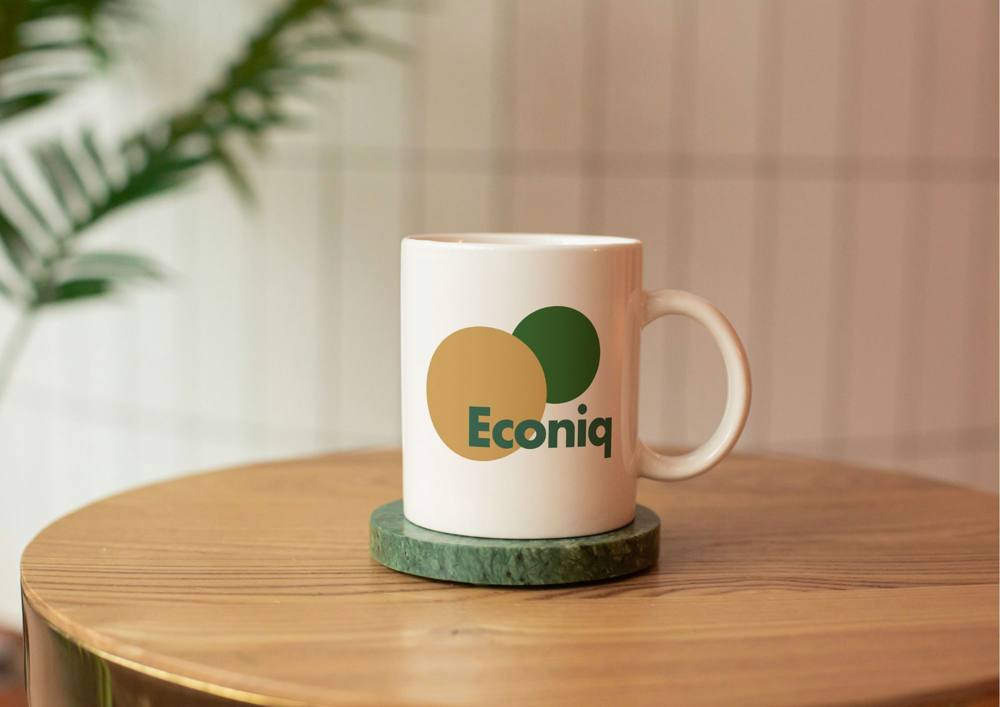
Econiq
FinTech SaaS Prototype
A FinTech founder had a solid concept, but his AI-generated prototype was hard to navigate. I led the UX redesign, rebuilt the information architecture, tightened the onboarding flow, and delivered a user-tested Figma prototype that non-experts could complete without help.
View Case Study
The Challenge
The concept was strong, but the prototype (built with AI tools) lacked structure: no navigation, inconsistent layouts, and an onboarding flow that made drop-off likely. The UX challenge was making forecasting and dashboard data approachable for small business owners without a finance background.
Role & Process
Two-person design team: I led UX, and a teammate led UI and brand identity.
- Audited the original prototype and documented usability and IA issues
- Rebuilt the information architecture and introduced a clear navigation model
- Redesigned onboarding to reduce steps and increase clarity at each decision point
- Built the redesigned flow in Figma
- Validated with 5 think-aloud usability tests + short interviews (local startup community)
- Ran expert reviews with a financial instructor to validate domain-specific assumptions
Outcome
We delivered a usable foundation for launch: brand, a coherent product structure, and a prototype. The founder accepted the redesign as the direction forward. In testing, users could complete the forecasting questionnaire and read the dashboard without assistance. That was a clear improvement over the original flow.


JuicOrganic
Smart Vending Machine Kiosk UI
How do you sell a product in a hurry, and still nudge more sustainable behaviour? For JuicOrganic’s shift from B2B to direct-to-consumer, we designed a smart vending machine concept with a reward loop for reusing bottles. I led UX research, shaped the kiosk flow, and built a working coded prototype.
View Case Study
The Challenge
The brief was open-ended: bring a B2B juice brand to consumers. Once we chose the vending machine direction, the core UX problem was speed. The interface had to work in busy locations (transit hubs), where people abandon anything that feels slow or confusing.
Role & Process
- Conducted 2 in-depth interviews (anthropology-informed) on sustainability attitudes and reusable bottle adoption
- Synthesised findings into journey maps, scenarios, and feature priorities
- Iterated wireframes to reduce friction and remove steps until the flow matched the real usage context
- Collaborated with teammates on high-fidelity visual design and illustrations in Figma
- Built a complete working front-end prototype (HTML, SCSS, JavaScript, Bootstrap), optimised for iPad Pro
- Produced an idle-screen promo animation in After Effects (also reusable for marketing)
Outcome
We delivered a working coded prototype, a high-fidelity Figma design, and a promotional video. It was a full concept with a testable flow, not just static screens. The project received top marks (12). Key learning: a “fast” kiosk experience comes from cutting steps and making decision points obvious, not adding more features.


GradeAid
Neuro-Inclusive Gamified Learning Concept
DTU-backed EdTech concept for neurodivergent learners. Beyond the brief (visual identity + characters), we reworked the experience using neuro-inclusive research and Blue Mind theory, aiming for calmer interactions and a gamification system that fits how the target group handles motivation and failure.
View Case Study
The Challenge
The client had working AI technology but needed a visual identity, a logo, and at least three animated characters (with tintable looks and accessories) to guide children through the app. When we researched the target group (neurodivergent children experiencing school refusal), we found that existing choices (colour palette, interaction patterns) could overstimulate the very users the product was meant to support. Most edtech assumes a motivated, neurotypical learner. We needed an experience grounded in how neurodivergent brains process visual information, motivation, and failure.
Role & Process
- Conducted desk research on neuro-inclusive design and Blue Mind theory
- Led an expert interview with a special needs teacher on colour palettes, motivation, and gamification design
- Created a 5-phase user journey (discovery → advocacy) to map needs and risks across the experience
- Designed the gamification system (coral reef metaphor, XP/currency loop, reward shop, age-adaptive progression)
- Co-designed the character system (tintable skins + age-adaptive evolution) for long-term engagement
- Produced character motion in After Effects with slow, fluid pacing to reduce overstimulation risk
Outcome
The project received top marks (12). What began as a visual identity and character brief became a broader product reframe: calmer motion, research-backed colour decisions, and a structured gamification loop. We validated the direction through an expert interview (special needs teacher) and an early test session with one child to sanity-check engagement and tone.
GradeAid
Design Internship
Design internship in a DTU-backed EdTech startup. I owned the mascot design (Aidly), built UI prototypes for the learning path/PBL platform, and shipped motion assets that work on the web. I moved fast with incomplete briefs and frequent iteration.
View Case Study
The Challenge
After our school collaboration, I joined GradeAid as a design intern. The company needed to take the concept from the exam project and make implementation choices that worked as a real product. My work included illustrating Aidly (the brand mascot), redesigning the learning path using visual storytelling, and creating motion content that performs on the web, while keeping the visual language gentle enough for kids.
Role & Process
- Designed and illustrated Aidly from scratch (Adobe Fresco + Illustrator) and created a reusable pose/expression library
- Prototyped the learning path and UI concepts in Figma and Google AI Studio
- Proposed ways to integrate the mascot into product and website UI
- Optimised SVG exports for lightweight, crisp graphics (smaller files, faster loads)
- Produced motion assets (After Effects, Fresco Motion, SVG) balancing quality with web performance constraints
- Supported usability testing focused on navigation and accessibility for the target student group
Outcome
I moved from student-team decision-making to individual ownership: Aidly (character system), the motion pipeline, and front-end experiments. The internship reinforced a core product skill: ship something testable with incomplete information, then iterate based on feedback and constraints.

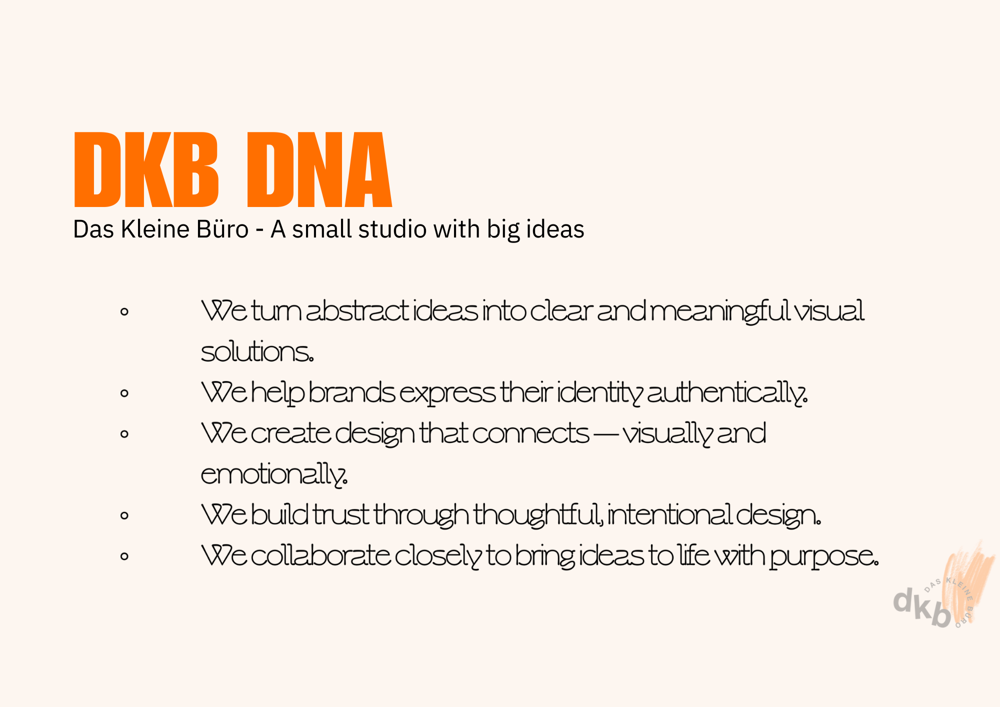
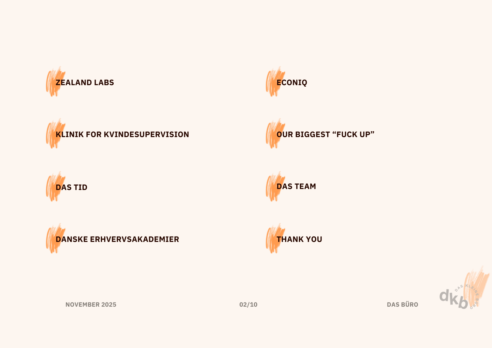
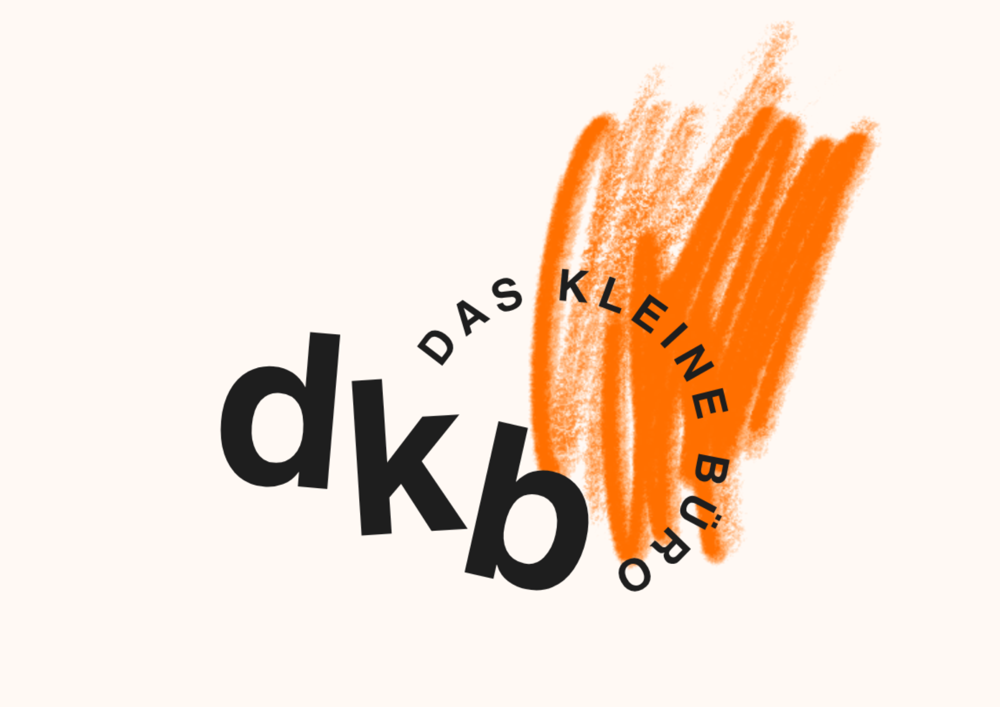
Das Kleine Büro
Digital Agency Simulation
Six-week digital agency simulation with real client delivery. I led workflow across 9 people and 5 accounts, setting up roles, stand-ups, and communication so we could avoid bottlenecks and keep quality steady under pressure.
View Case Study
The Challenge
The scope was deliberately overwhelming. That was the point. Nine people with different skills, ambition levels, and working styles had to deliver to real clients at the same time. The challenge wasn’t just the design work. It was building a team structure that could function under pressure, with clear communication and accountability.
Role & Process
- Mapped team skills and work preferences to form effective sub-teams
- Assigned accounts based on strengths and project needs
- Introduced daily stand-ups for visibility and early bottleneck detection
- Set single points of contact per client to keep communication clear
- Supported delivery through people leadership: ownership, quality checks, and unblock work
- Owned one client case (Econiq) alongside coordination duties
Outcome
All client projects were delivered on deadline. When three agency teams had to choose one team to collaborate with, both local teams selected the international team, but the international team chose us, citing our inclusive team culture. Instructors highlighted our collaboration as a standout. My biggest takeaway: I went in calling myself "just a coordinator" and came out knowing that good teams need someone willing to lead, not just organise.

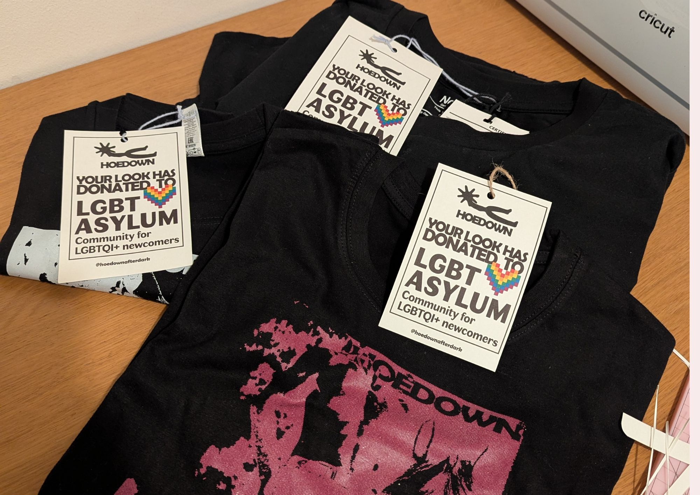

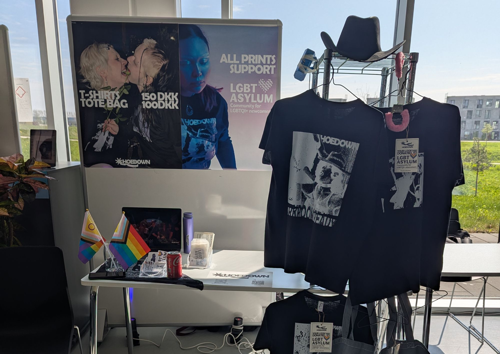

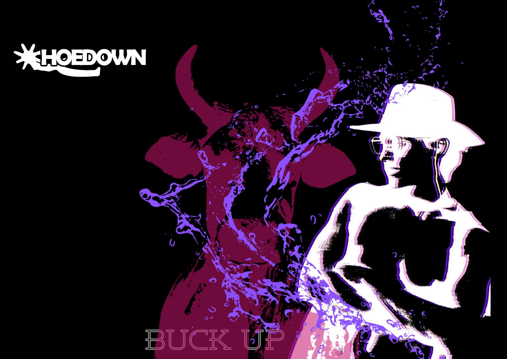
Hoedown After Dark
E-commerce Brand
E-commerce brand built end-to-end: concept, product line, webshop, and real sales. I led strategy and validation (Lean MVP testing + conversion-focused content), then iterated the concept based on direct audience feedback.
View Case Study
The Challenge
The brief was to create a working e-commerce brand from scratch: product design, a web shop, and actual sales. The real challenge was building something with a real identity, not just a student exercise. We leaned into the group’s shared connection to queer culture and the techno scene, which made the brand feel honest in a way a generic concept wouldn’t.
Role & Process
- Led strategy using Business Model Canvas, clarity SEO, and persuasive design principles
- Designed CTA hierarchy and donation framing to support conversion and trust
- Validated the concept with Lean methods: MVP tested at a flea market in a techno club with queer roots
- Iterated product line and messaging using direct target-audience feedback
Outcome
We launched a functioning web shop, sold real T-shirts, tote bags, and stickers, and donated all revenue (nearly 1,000 DKK) to LGBT Asylum. We were the only group to donate proceeds and the top-selling group at the project showcase. The brand also got real traction on Instagram, including a DJ posting a photo wearing our T-shirt, which drove a spike in engagement. This project stands out in my portfolio for being the most creatively different, and for proving that a specific subculture makes a stronger brand than trying to appeal to everyone.
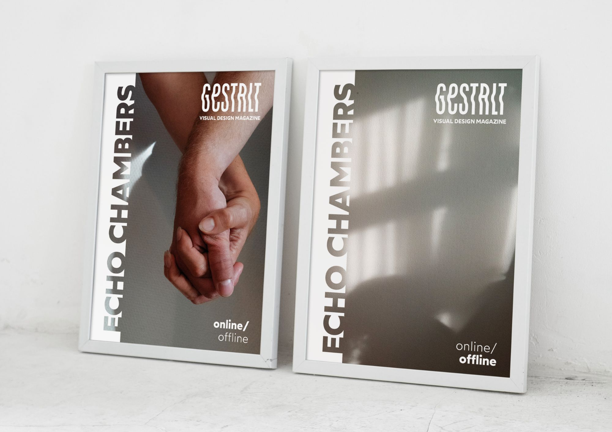

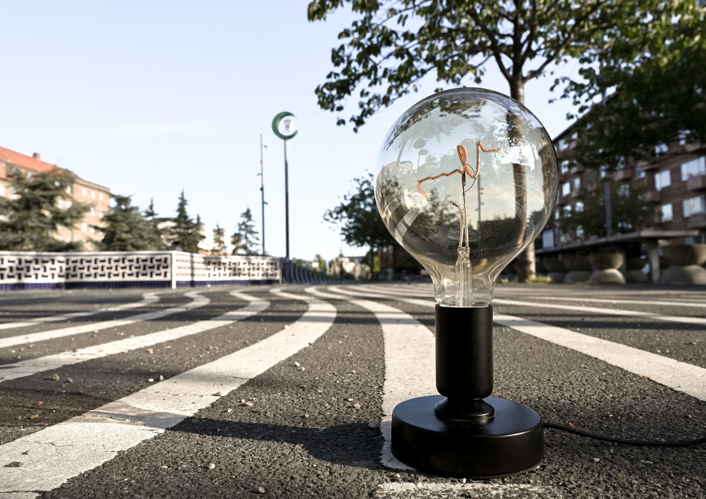
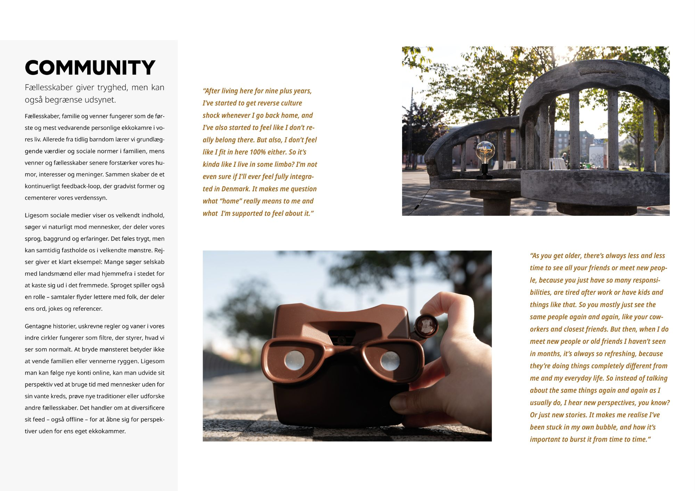
Gestalt
Digital Magazine
A feature article for a collaborative digital magazine. The angle is that echo chambers aren’t just online. They’re built into cultures, language, and communities. I wrote the article, shot all original photography, and designed the layout in InDesign using Gestalt principles and a strict grid.
View Case Study
The Challenge
Create a cohesive editorial piece end-to-end (concept, writing, original photography, and layout) and make a nuanced argument beyond the usual “social media is bad” framing.
Role & Process
- Framed the topic through an anthropology lens: culture/language/communities as “offline algorithms”
- Interviewed peers to avoid a single-perspective narrative and used quotes as structure
- Shot and edited original photography (Lightroom) to support the theme
- Designed the layout in InDesign using Gestalt principles and strict grids
Outcome
The article was published in the final collaborative magazine. One instructor said the layout looked like it could belong in a professional publication. The project shows visual thinking, grid-based design, and the ability to own a full creative process from idea to finished piece.
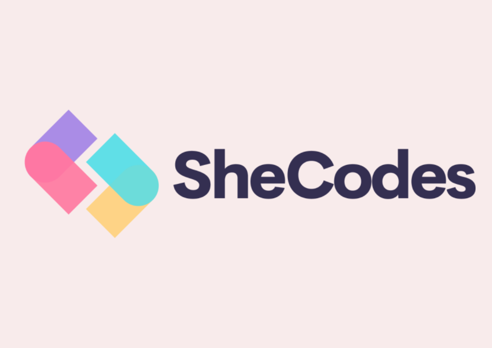

SheCodes
Front-End Development · Ongoing
I'm building my front-end skills through SheCodes, a coding program for women in tech. The curriculum covers HTML, CSS, and JavaScript with hands-on workshops. I'm currently completing the Plus track, which focuses on interactive applications and API integration.
What I've practised
- Responsive layouts with Flexbox and CSS Grid
- JavaScript DOM manipulation and event handling
- Building and deploying multi-page websites